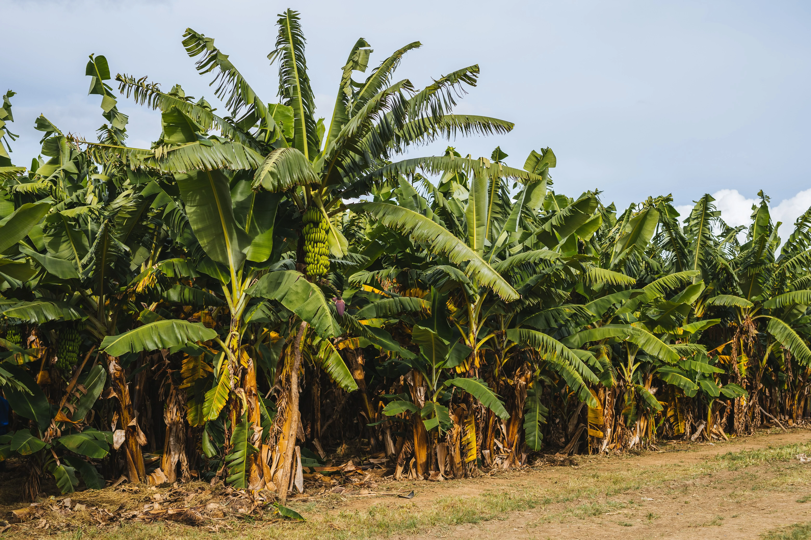

A banana é a fruta mais consumida no Brasil e no mundo, e existe um motivo por trás disso, a banana promove uma melhor capacidade de produção de proteínas no corpo, também faz uma manutenção do açúcar no sangue, além de ser rica em vitamina B6, vitamina que é utilizada pelo corpo na produção da hemoglobina. Mas falando sério, o verdadeiro motivo pelo qual o consumo da banana é tão grande, é pela sua praticidade.
A banana é uma fruta que pode ser consumida a qualquer hora e em qualquer lugar sem muita dificuldade, além de encaixar muito bem com praticamente qualquer outro alimento, vitaminas, doces, bolos, sorvetes e muito mais. O cardápio que pode ser criado a partir de uma única fruta é praticamente ilimitado. A banana é muita rica em diversas vitaminas, C, B1, B2, B3, B6, B9, A, E e K
A fruta é muito utilizada por praticantes de esportes, como musculação e corrida, rica em carboidratos e minerais, é recomendado a se comer antes da prática, pois melhora o rendimento e ajuda na prevenção de cãibras. Além de melhorar o metabolismo e as reações químicas presentes no corpo humano.
Rica em fibras, antioxidantes, a fruta ajuda a manter o sistema digestivo saudável e a prevenir cânceres, como o de cólon por exemplo, a partir da produção do ácido butírico, substância anticancerígena.
Passo a passo: Bananeiras são plantas que acumulam muita água e necessitam de uma certa quantidade de chuva para se manterem saudáveis.Apesar da forte relação com a água, o solo não deve se manter encharcado e sim, sempre bem drenado e nutrido.Sua temperatura ideal é bem ampla, podendo variar de 15º até 30ºC.A fruta costuma levar até 12 meses para estar pronta para a colheita.